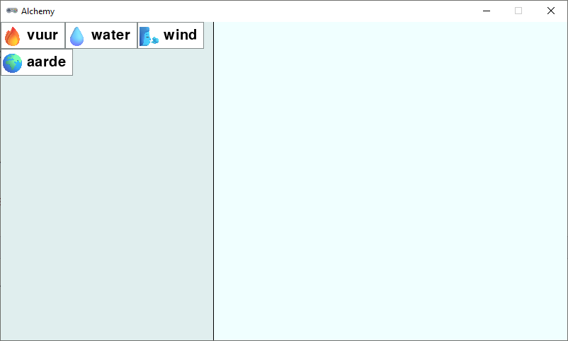
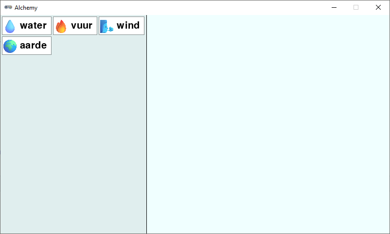
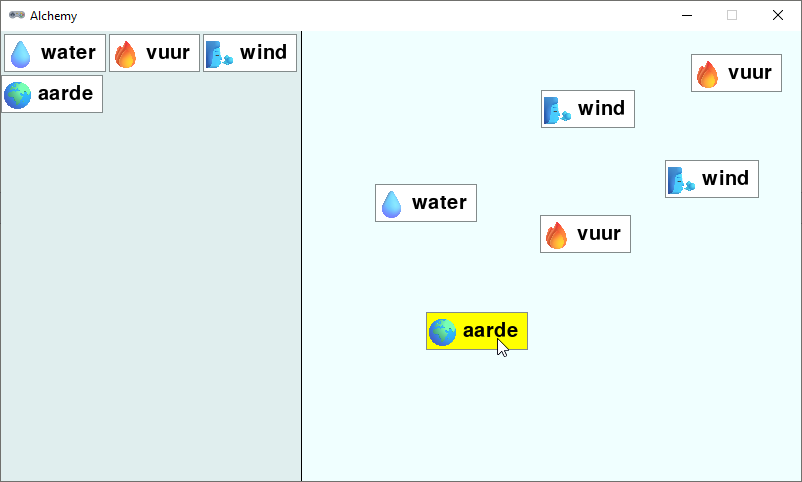

4.9. Venster in twee delen#
In deze stap gaan we het venster in twee delen splitsen. Aan de linkerkant komt de lijst met elementen die je hebt ontdekt, en aan de rechterkant het gebied waar je elementen kunt combineren. De lijst met elementen noemen we de inventory en het gebied waar je elementen kunt combineren is de workbench.
4.9.1. Inventory#
De gebieden voor de inventory en de workbench zijn twee rechthoeken. Voeg de volgende drie regels toe aan de # WINDOW SETTINGS sectie:
8# WINDOW SETTINGS
9
10WIDTH = 800
11HEIGHT = 450
12TITLE = 'Alchemy'
13
14inventory_width = 300
15inventory_rect = Rect((0, 0), (inventory_width, HEIGHT))
16workbench_rect = Rect((inventory_width, 0), (WIDTH-inventory_width, HEIGHT))
Voeg ook een lijst toe voor de elementen in de inventory:
30# DICTIONARIES AND LISTS
31
32elements = {}
33recipes = {}
34workbench = []
35inventory = []
De element cards in de inventory worden naast elkaar getekend, maar als er niet meer genoeg ruimte is, moeten ze naar een volgende regel gaan. Om het rekenwerk een beetje makkelijker te maken, voegen we het volgende return statement toe aan de draw_element_card() functie:
95def draw_element_card(element_id, pos, bordercolor='azure4', bgcolor='white', fontcolor='black'):
96 element = elements[element_id]
97 lbl = element['label']
98 img_name = element['image']
99 rect = element['rect']
100 img = pygame.transform.scale(eval(f'images.{img_name}'), (ICONSIZE, ICONSIZE))
101 rect.topleft = pos
102 screen.draw.filled_rect(rect, bgcolor)
103 screen.draw.rect(rect, bordercolor)
104 screen.blit(img, (rect.left + LEFTMARGIN, rect.top + TOPMARGIN))
105 screen.draw.text(lbl, midleft = (rect.midleft[0] + LEFTMARGIN + ICONSIZE + HSPACE, rect.midleft[1]), fontsize=FONTSIZE, color=fontcolor)
106 return rect
Deze regel zorgt ervoor dat de functie het Rect object van de zojuist getekende element card retourneert, dat we later kunnen gebruiken om de positie van de volgende card te bepalen.
Voor het tekenen van de inventory maken we een functie draw_inventory():
108def draw_inventory():
109 screen.draw.filled_rect(inventory_rect, 'azure2')
110 last_pos = (0, 0)
111 for card in inventory:
112 card_width = card['rect'].width
113 if (last_pos[0] + card_width) > inventory_width:
114 last_pos = (0, last_pos[1] + CARD_HEIGHT)
115 r = draw_element_card(card['id'], last_pos)
116 card['rect'] = r
117 last_pos = (r.right, r.top)
De achtergrond van de inventoryrechthoek maken we azure2, zodat hij contrasteert met de rest van het venster. In de variabele last_pos houden we de positie van rechterbovenhoek van de laatste getekende element card bij. Het if statement in regel 113 checkt of het nodig is naar een nieuw regel te gaan. Als de rechterkant van de laatste card verder naar rechts zou komen dan de breedte van de inventory, dan zetten we last_pos op de linkerbovenhoek van de volgende regel. In regel 116 updaten we het Rect object van de element card.
In de draw() functie roepen we nu de draw_inventory() functie aan en we tekenen een lijn om de inventory van de rest van het venster te scheiden:
123def draw():
124 screen.fill('azure')
125 draw_workbench()
126 draw_inventory()
127 screen.draw.line((inventory_width, 0), (inventory_width, HEIGHT), 'black')
128 if dragging:
129 draw_element_card(dragged['id'], dragged['rect'].topleft, bgcolor='yellow')
Om te testen voegen we in het hoofdprogramma een paar elementen toe aan de inventory:
137# MAIN PROGRAM
138
139load_elements()
140calc_card_rects()
141add_element_to_list('fire', inventory)
142add_element_to_list('water', inventory)
143add_element_to_list('wind', inventory)
144add_element_to_list('earth', inventory)
Test het programma nu uit. Je zou nu een venster moeten zien met aan de linkerkant de inventory met de vier elementen die we hebben toegevoegd. De elementen staan naast elkaar en gaan naar een nieuwe regel als er niet genoeg ruimte is.

De element cards in de inventory kunnen nog niet worden versleept, maar we gaan ze eerst nog iets mooier positioneren. Ze staan nu namelijk dicht tegen elkaar aan en het is mooier als er wat ruimte tussen zit. We voegen een constante toe voor de ruimte tussen de cards:
14inventory_width = 300
15inventory_rect = Rect((0, 0), (inventory_width, HEIGHT))
16workbench_rect = Rect((inventory_width, 0), (WIDTH-inventory_width, HEIGHT))
17PADDING = 3
En we passen de draw_inventory() functie aan om rekening te houden met deze ruimte:
109def draw_inventory():
110 screen.draw.filled_rect(inventory_rect, 'azure2')
111 last_pos = (PADDING, PADDING)
112 for i in inventory:
113 card_width = i['rect'].width
114 if (last_pos[0] + card_width + PADDING) > inventory_width:
115 last_pos = (PADDING, last_pos[1] + CARD_HEIGHT + PADDING)
116 r = draw_element_card(i['id'], last_pos)
117 i['rect'] = r
118 last_pos = (r.right + PADDING, r.top)
Dit ziet er beter uit:

In het hoofdprogramma hebben we zojuist handmatig vier elementen toegevoegd aan de inventory, maar in de tekstversie van het spel maakten we de functie build_recipes() die automatisch de primes (de basiselementen) kan toevoegen aan de inventory. We kunnen deze functie bijna identiek gebruiken in de Pygame Zero versie. Voeg onderstaande code toe na de add_element_to_list() functie. De regel die verschilt van de tekstversie is gemarkeerd.
66def build_recipes():
67 with open('recipes.txt', 'r') as file:
68 recipes_txt = file.read()
69 first_part, second_part = recipes_txt.split('\n-\n')
70 primes = first_part.split('\n')
71 combinations = second_part.split('\n')
72 for prime in primes:
73 if prime not in elements:
74 raise Exception('Recipe error: unknown prime element.')
75 add_element_to_list(prime, inventory)
76 for combination in combinations:
77 left, right = combination.split('=')
78 ingredients = left.split('+')
79 if (len(ingredients) != 2):
80 raise Exception('Recipe error: number of ingredients must be exactly 2.')
81 if ingredients[0] not in elements or ingredients[1] not in elements:
82 raise Exception('Recipe error: unknown ingredients.')
83 ingredients.sort()
84 if ingredients[0] not in recipes:
85 recipes[ingredients[0]] = {ingredients[1]: right}
86 else:
87 recipes[ingredients[0]][ingredients[1]] = right
Verwijder nu de vier add_element_to_list() aanroepen uit het hoofdprogramma en roep in plaats daarvan de build_recipes() functie aan:
160# MAIN PROGRAM
161
162load_elements()
163calc_card_rects()
164build_recipes()
Run het programma opnieuw. Je zou dezelfde vier elementen in de inventory moeten zien, maar nu zijn ze automatisch toegevoegd vanuit de recipes.txt file.
4.9.2. Slepen vanuit de inventory of workbench#
Nu we het venster in twee delen hebben gesplitst, moeten we daar bij het slepen van elementen rekening mee houden. Het maakt namelijk uit of een element vanuit de inventory wordt gesleept of vanuit de workbench. En ook bij het ‘droppen’ van een element moeten we detecteren of dat gebeurt in de inventory of in de workbench.
In de on_mouse_down() functie plaatsen we een if statement om te controleren of de muis zich in de inventory of in de workbench bevindt:
91def on_mouse_down(pos, button):
92 global dragged, dragging
93 if pos[0] < inventory_width:
94 # Clicked in inventory
95 for card in inventory:
96 r = card['rect']
97 if r.collidepoint(pos):
98 dragged = {
99 'id' : card['id'],
100 'rect' : r.copy(),
101 'click_pos' : (pos[0] - r.x, pos[1] - r.y),
102 }
103 dragging = True
104 return
105 else:
106 # Clicked in workbench
107 for card in reversed(workbench):
108 r = card['rect']
109 if r.collidepoint(pos):
110 dragged = {
111 'id' : card['id'],
112 'rect' : r,
113 'click_pos' : (pos[0] - r.x, pos[1] - r.y),
114 }
115 workbench.remove(card)
116 dragging = True
117 return
In regel 93 controleren we of de x-coördinaat van muis pos[0] kleiner is dan de breedte van de inventory. Als dat zo is, dan is de muis in de inventory en gaan we zoeken naar een element card die overeenkomt met de muispositie. De for loop waarmee we dat doen lijkt sterk die in regels 107-117, maar er zijn enkele verschillen:
De
workbenchlijst doorlopen we in omgekeerde volgorde, omdat we de laatst getekende element cards het eerst willen checken. Voor de inventory is dat niet nodig, want daarin overlappen de element cards elkaar niet.Een belangrijker verschil is dat in regel 115 de opgepikte element card wordt verwijderd uit de workbench, terwijl we dat in de inventory niet doen. In de inventory blijven de element cards altijd staan, ook als je ze oppakt.
In regel 100 maken we een kopie van de
Rectvan de opgepikte element card, zodat we de positie kunnen wijzigen zonder deRectvan de card in de inventory te veranderen.
Run het programma en sleep elementen vanuit de inventory naar de workbench. Versleep daarna ook elementen binnen de workbench. Je ziet dat van de element cards in de inventory een kopie wordt gemaakt, terwijl de element cards in de workbench daadwerkelijk worden verplaatst. Dit is precies wat we willen.

Wat zou er gebeuren als we een element in de inventory droppen? We hebben nog geen code geschreven om die gebeurtenis af te handelen, maar het lijkt erop dat de element card dan verdwijnt. Hoe komt dat, denk je? Als je geen idee hebt, verwissel dan de volgorde van de regels 163 en 164 in de draw() functie:
161def draw():
162 screen.fill('azure')
163 draw_workbench()
164 draw_inventory()
165 screen.draw.line((inventory_width, 0), (inventory_width, HEIGHT), 'black')
166 if dragging:
167 draw_element_card(dragged['id'], dragged['rect'].topleft, bgcolor='yellow')
Als we eerst de workbench tekenen en daarna de inventory, dan zie je dat element cards die in de inventory worden gedropt daar gewoon blijven staan. Eerder zagen we dat niet, doordat het inventory gebied bovenop de workbench werd getekend. We lossen het probleem op door in de on_mouse_up() functie te controleren of de element card wordt gedropt in de workbench:
124def on_mouse_up():
125 global dragging
126 if dragging:
127 dragging = False
128 r = dragged['rect']
129 if workbench_rect.contains(r):
130 add_element_to_list(dragged['id'], workbench, r)
131 dragged.clear()
In regel 129 gebruiken we workbench_rect.contains(r) om te controleren of de Rect van de opgepikte element card binnen de workbench valt. Als dat zo is, dan voegen we de element card toe aan de workbench. Test de code om te zien of het werkt. Als je een element card in de workbench dropt, dan zou deze daar moeten blijven staan. Maar als een stukje van de card zich buiten de workbench bevindt, dan verdwijnt de card.